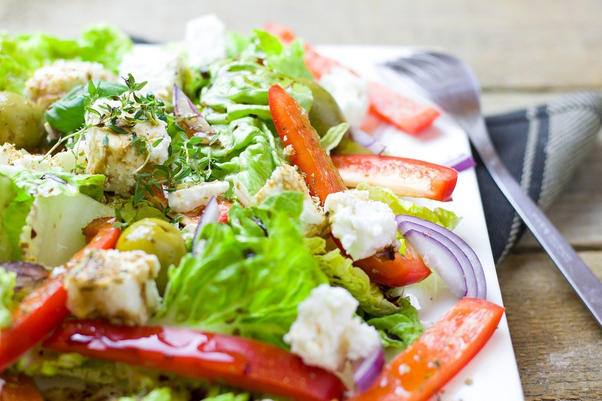

Grieschischer Bauernsalat
15 Min.
simpel
04.08.2025
| 1 Salatgurke(n) |
| 2 Paprikaschot(n), rot und grün |
| 500g Tomate(n) |
| 2 Zwiebel(n) |
| 200g Schafskäse(n) |
| 1 Glas Oliven, schwarze, ca 100g |
| Salz und Pfeffer |
| 1 Zitrone(n) |
| 125ml Olivenöl |
| Oregano |
Zubereitung
ca. 15 Minuten
Gesamtzeit ca. 15 Minuten
Gurke waschen und ungeschält in dünne Scheiben oder Stücke schneiden. Paprika Waschen, entkernen und in dünne Streifen schneiden. Tomaten waschen und achteln. zwiebeln schälen und in feine Ringe schneiden. Schafskäse würfeln und mit Oregano bstreuen. Oliven abgießen und mit Gurke, Paprika, Tomaten, Zwiebeln und Schafskäse in eine Schüssel geben. Olivenöl, Zitronensaft, Salz und Pfeffer zu einer Sauce verrühren und über den Salat gießen. Umrühren.
Rezept erstellt von

Marcel Zielonka